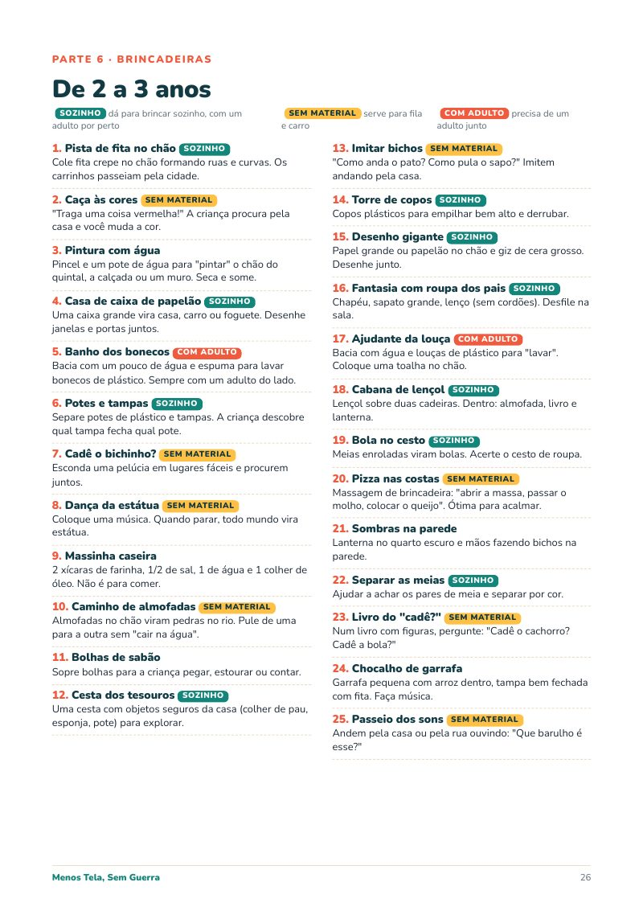

Para mães e pais de crianças de 2 a 10 anos
Desligar a tela não precisa virar guerra
Um plano de 21 dias, passo a passo, para diminuir o tempo de tela com menos choro, menos grito e menos negociação.
21 dias
passo a
passo
passo a
passo


R$19,90
pagamento único · PDF para ler no celular ou imprimir
Quero o guia por R$ 19,90
Garantia de 7 dias ou seu dinheiro de volta